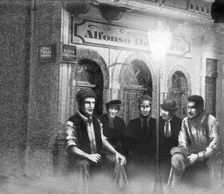
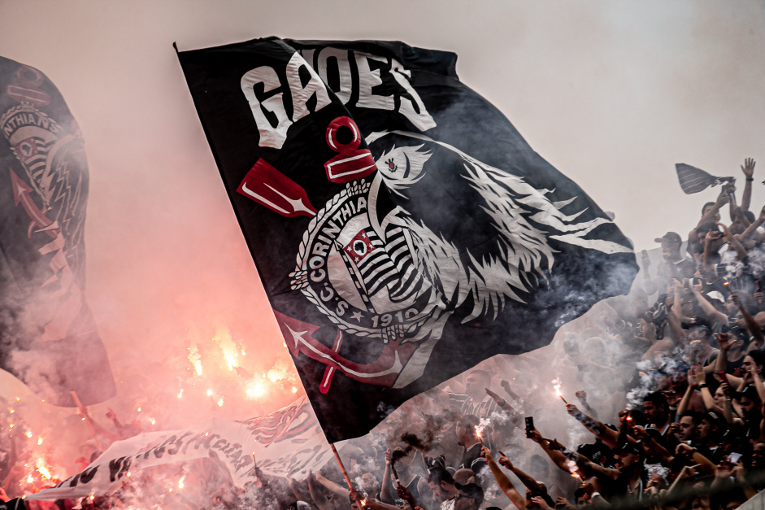
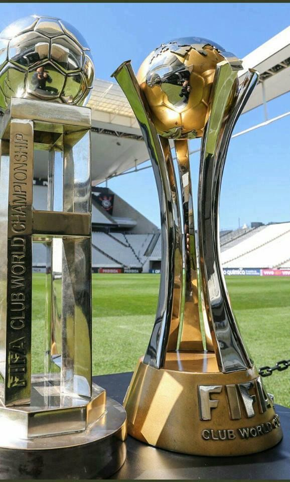

O Sport Club Corinthians Paulista, fundado em 1º de setembro de 1910, é mais do que apenas um clube de futebol; é uma paixão que une milhões de torcedores em todo o mundo. Com uma história rica e uma base de fãs fervorosa, o Corinthians se destaca como um dos clubes mais emblemáticos do Brasil e do mundo.
Os torcedores do Corinthians celebram não apenas as vitórias em campo, mas também os valores de determinação, trabalho em equipe e resiliência que o clube representa. Ao longo dos anos, o Corinthians conquistou inúmeros títulos nacionais e internacionais, deixando uma marca indelével no cenário esportivo.
Em nossa galeria de imagens, explore momentos inesquecíveis de partidas épicas, celebrações de campeonatos e a paixão ardente dos torcedores. Cada imagem conta uma história única, capturando a emoção e o espírito indomável que definem o Corinthians. Junte-se a nós nesta jornada visual e mergulhe no universo apaixonante do Sport Club Corinthians Paulista.
Um dos maiores feitos do Corinthians foi a conquista do Mundial de Clubes da FIFA em 2000, derrotando o poderoso Vasco da Gama nos pênaltis. Esse título global solidificou o status do clube como uma força a ser reconhecida internacionalmente. Além disso, o Corinthians é conhecido por seu estádio impressionante, a Arena Corinthians, inaugurada em 2014 para a Copa do Mundo FIFA. O estádio não é apenas uma casa para os jogadores, mas também um símbolo de modernidade e inovação no esporte.
Além do sucesso em campo, o Corinthians também está envolvido em iniciativas filantrópicas e comunitárias. O clube realiza programas sociais para apoiar crianças carentes e comunidades necessitadas, demonstrando seu compromisso com a responsabilidade social.
O Corinthians também tem uma forte tradição de desenvolvimento de talentos. O clube tem uma das melhores academias de futebol do Brasil, produzindo jogadores talentosos que brilham tanto no cenário nacional quanto internacional. Grandes nomes como Sócrates, Rivelino, Ronaldo e muitos outros deixaram uma marca indelével na história do Corinthians e do futebol mundial.
A jornada do Corinthians está longe de terminar. Enquanto a equipe entra em campo para enfrentar desafios futuros, a paixão dos torcedores e a rica história do clube continuarão a iluminar o caminho, inspirando as gerações presentes e futuras a acreditar no poder do esporte para unir, emocionar e transformar vidas.